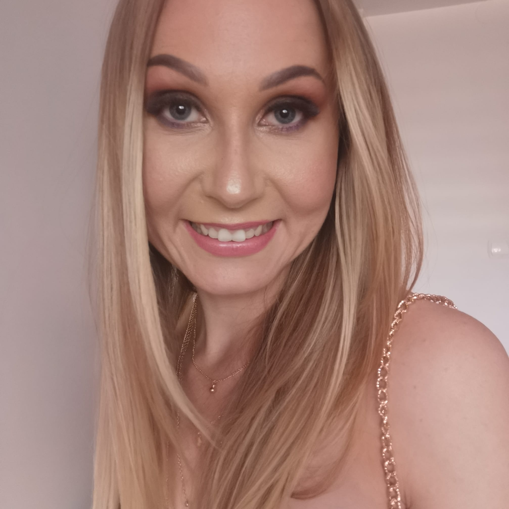
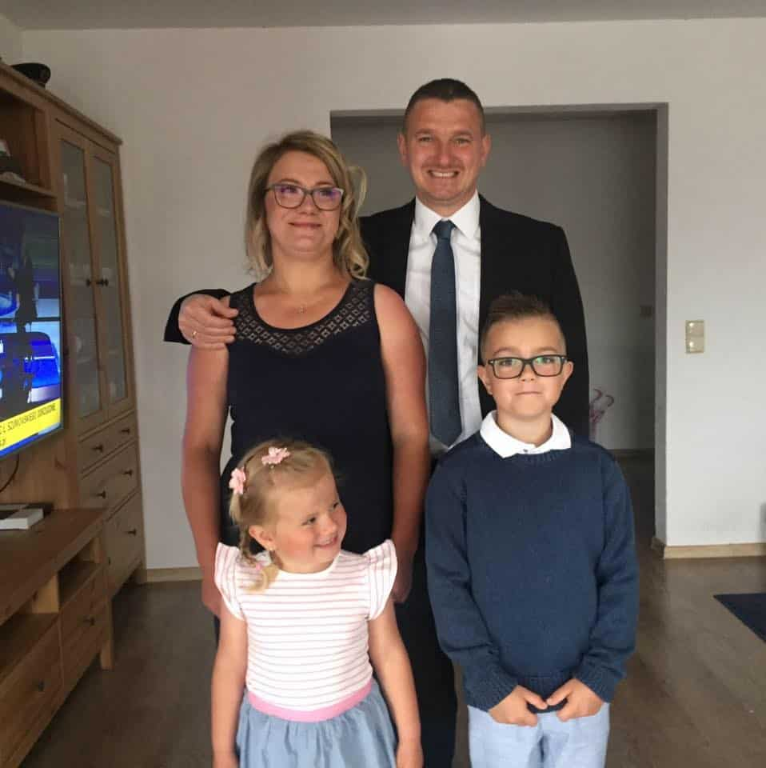

Opinie i Recenzje Współpracy
Co o moich sesjach mowią moi klienci..
Gosia to przecudowny fotograf ♥️, jej praca zachwyca za każdym razem, zarówno na sesji brzuszkowej, noworodkowej i teraz świątecznej. Zdjęcia są przepiękne mimo trudnego modela jakim jest nasza córeczka 😂 Jesteśmy bardzo bardzo zadowoleni i na pewno wrócimy nie raz 😘

- Kinga Kwiecień, 18 Grudnia 2020
Polecam z całego serca! Gosia to cudowna, ciepła osoba z niesamowitym podejściem do pracy. Zdjęcia zawsze CUDOWNE 😍 i to przy dwójce małych dzieci 🙈. Jeżeli szukacie fotografa to dobrze trafiliście. Idealna osoba na odpowiednim miejscu. Gosiu My u Ciebie już zagościmy na dłużej ❤️
- 
- Natalia Strzałkowska, 14 Grudnia 2020
Cudowna młoda, ale z ogromnym potencjałem i zdolnościami, fotograf.
Do sesji rodzinnych, ale i biznesowych!
Była naszym cudownym wsparciem na ślubie, a potem na sesji biznesowej.
Polecam 😍
Ocena 6+
- Emilia Dubiela, 10 Października 2020
Jak fotograf na różne okazje to tylko Gosia! Kolejny raz nas pozytywnie zaskoczyła 😊 była sesja Chrztu Św córci, sesja świąteczna a teraz sesja Komunijna syna 😀 hm... co będzie kolejnym razem? 🧐 nie wiem ale na pewno nie raz skorzystamy z Gosi usług 😘
polecamy! 😊
- 
- Sylwia Kieniksman, 10 Października 2020